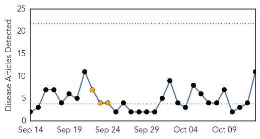
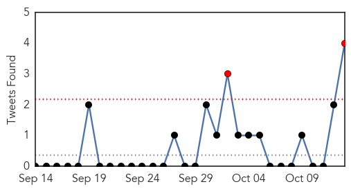

30 Day Trends
Web: 0 alerts, 3 warnings
Twitter: 2 alerts, 0 warnings
Top Articles:
- 0.999
- News Scan for Oct 12, 2015
- 0.992
- More than 1,400 infected with cholera in Iraq
- 0.965
- Groups: UN must provide 'justice' for Haiti cholera victims
- 0.965
- Groups: UN must provide 'justice' for Haiti cholera victims
- 0.960
- One-dose cholera vaccine better than its two-dose type
- 0.952
- WHO confirms cholera outbreak in Iraq
- 0.863
- Police Gives Hope to Kisenyi H/C Clinic
- 0.863
- Central Bank Takes Over Imperial Bank
- 0.832
- Groups: UN must provide ‘justice’ for Haiti cholera victims
- 0.771
- Groups: UN must provide 'justice' for Haiti cholera victims
- 0.693
- Haiti Cholera
Top Tweets:
- 0.821
- RT: At 10 am EST cholera victims in Haiti will announce activities to commemorate 5Y of cholera. Follow f…
- 0.668
- RT: Amnesty: UN "is miserably failing the victims of the cholera epidemic its personnel triggered in Haiti 5 years ago" https:…
- 0.645
- RT: 5 years since UN brought cholera to Haiti. 8847 lives taken 800000 infected. Stay tuned for press conf in …
- 0.600
- RT: @secgen/UN "miserably failing" cholera victims "proper investigation" needed! AI on 5yr anniversary of outbreak: http…
Web/News Articles
Tweets
Article Locations